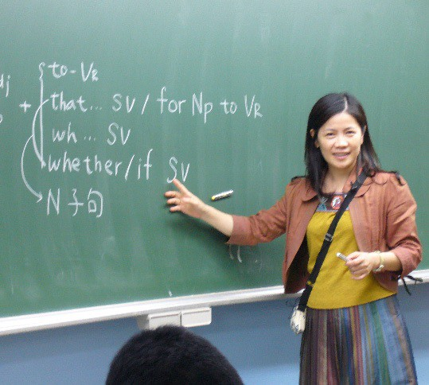

英文老師
任職23年,學歷：台大財金外文雙修 常針對學生個別問題指導，不僅為全台各地大型補習班爭相邀課之王牌名師，其著作參考書更橫跨南一、翰林、龍騰、康熙、漢華等大型出版社，如篇章結構練習 (金麟出版社)、克漏字練習 (金麟出版社)、模考試題練習 (金麟出版社)、超精準模考試題 (南一書局)...等
國文老師
任職20年,學歷：國立清華大學文學研究所、彰化師大國文研究所碩士 經歷：曾任國高中教師，教育部104、105、106精進師資計畫講師，106大學指考補教協會與聯合報國文科解題教師、醫科重考班國文教師、專業PISA閱讀教學研究種子教師、台北國際書展參展叢書《國語文小講堂》雲端講師、國科會 97學年度研究計畫(文學領域)獎助。
數學老師
任職15年,學歷：台大機械系畢業 十數年補教經驗 培育學子無數 教學強調~數學不單單只是在學計算解題!!重要的是學習邏輯思考!!解題過程每一個步驟都是有邏輯的！配合108新課綱，喜歡以日常生活中易懂的例子，去解釋困難複雜的題型，並以輕鬆幽默的方式吸引學生，提高同學們上課的專注力。